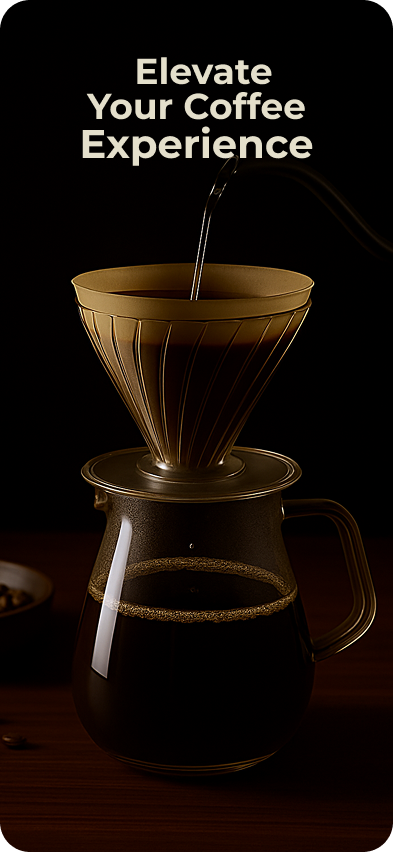
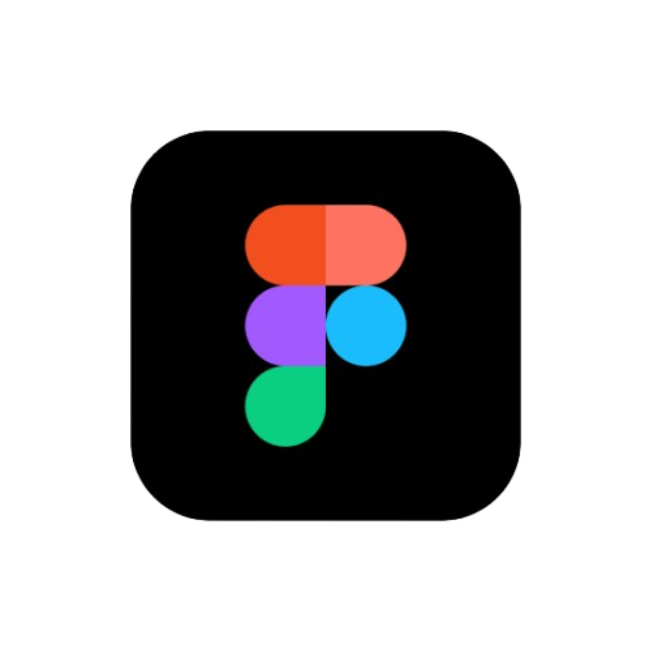
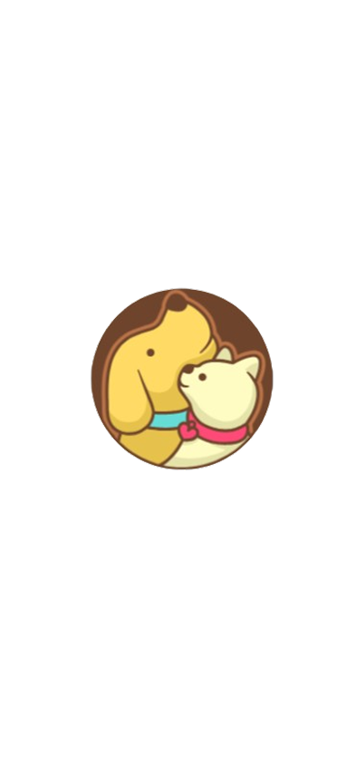
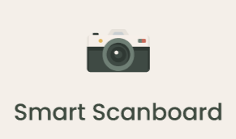
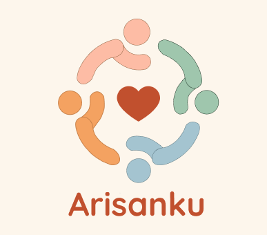
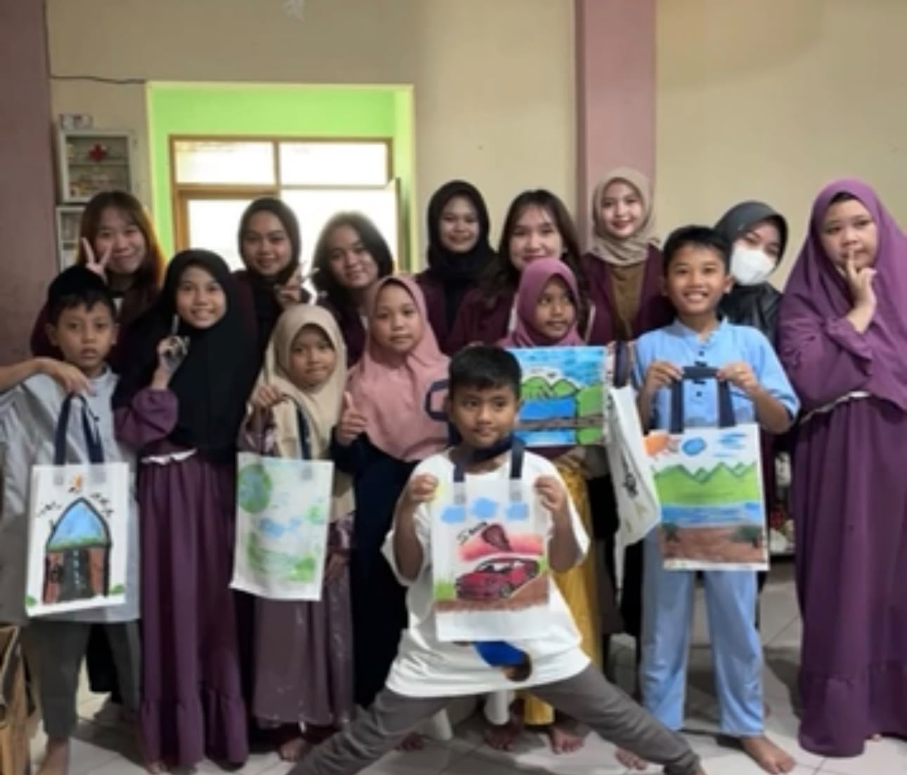
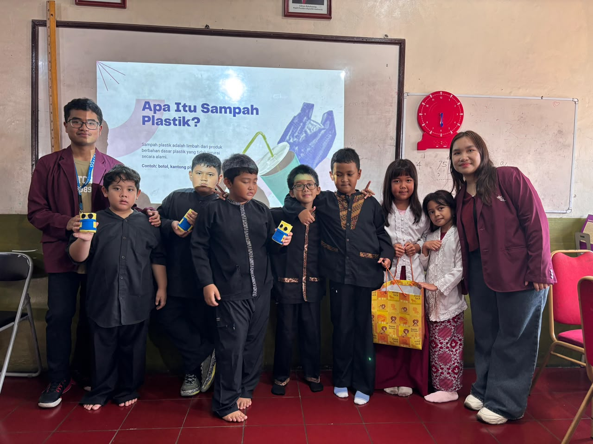
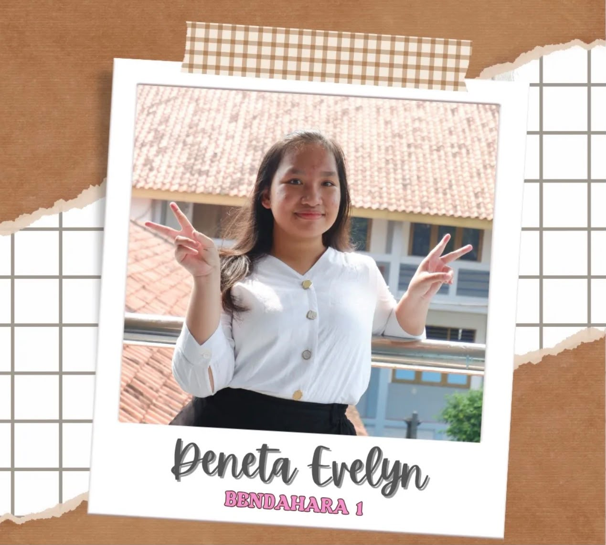
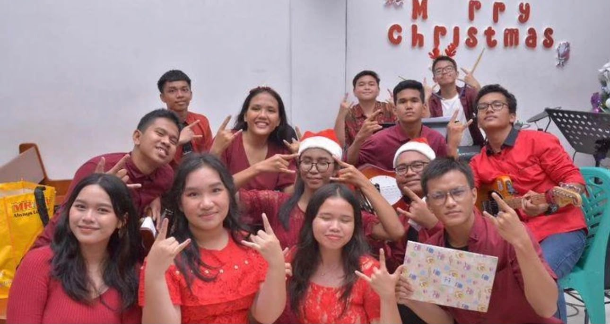
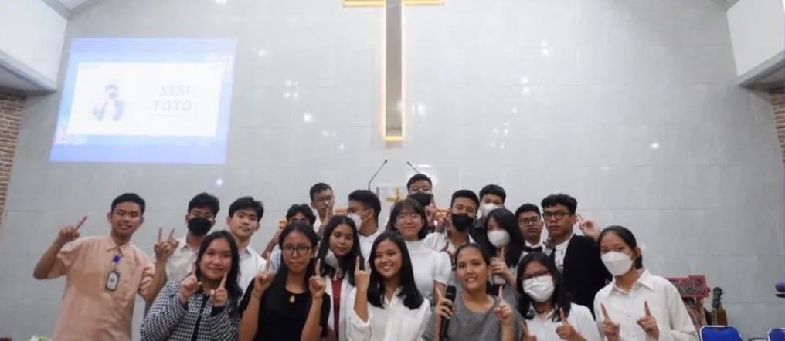

About Me
I’m a fifth-semester Computer Science student at BINUS University with a GPA of 3.05, currently pursuing a minor in Digital Transformation. I’m especially interested in UI/UX design and have explored it through academic projects, designing websites and applications with Figma—from user flows and wireframes to prototypes. I’m also building my knowledge of data through my coursework and look forward to applying it in future projects.
My Interests
UI/UX Design
Web Development
Data
Digital Transformation
Currently Learning
UI/UX design, web development, and data
Tools I Use


Projects
A selection of academic projects I worked on during my studies.



Activities

January 30, 2026 · SMAN 21 Bandung
Informatics Coaching
as Teaching Assistant
I took part in an informatics coaching session at SMAN 21 Bandung, where I helped BINUS University Bandung lecturers Pak Haldi and Pak Davy teach students how to build a calculator in a simple and approachable way, together with fellow students Pamella, Azalea, Shafiya, and Owen.

April 19, 2026 · PSSA Nurul Ihsan
BAKSOS LUKIS Patung
as a Volunteer
I volunteered in a social service activity, painting together with children from PSSA Nurul Ihsan.

October 24 · SDN 113 Banjarsari, Bandung
ESSE Project
as Activity Planner & Volunteer
As part of the ESSE Project, I helped plan and lead an activity with Nara, Geoffrey, Fahry, Ikshan, Ridho, and Hilmee, under the guidance of our senior Ci Natasha. We taught fourth-grade students at SDN 113 Banjarsari, Bandung about plastic waste, its impact, and the importance of recycling and reducing waste.

Executive Committee — Head Treasurer 2023–2024 · SMA Negeri 3 Kabupaten Tangerang
Christian Fellowship
as Head Treasurer
Served as the Head Treasurer of the Christian Fellowship at SMA Negeri 3 Kabupaten Tangerang during the 2023–2024 term. I managed the organization’s finances, recorded income and expenses, prepared a budget report, and coordinated with other committee members to allocate funds for fellowship activities.

January 13, 2024 · SMA Negeri 3 Kabupaten Tangerang
Christmas Celebration
As Treasurer · Consumption Team · Timekeeper
As the treasurer for the Christmas celebration, I recorded the event’s income and expenses and prepared a financial report. I also monitored the consumption team’s progress to keep track of its preparations. During the event, I served as the timekeeper and helped keep the program running according to schedule.

September 29–30, 2023 · Kampung Kelapa
Joint Inauguration
as Treasurer · Consumption · Logistics
Served on the committee for the 2024–2025 joint inauguration period, held at Kampung Kelapa on September 29–30, 2023. I took on responsibilities as treasurer, supported the consumption team, and helped with logistics and event equipment. Through these roles, I contributed to preparing the needs of the committee and supporting the event throughout its preparation and execution.

April 15, 2023 · HKBP Binong Permai
Easter Celebration
As Treasurer
I served as the treasurer for the Easter celebration organized by SMA Negeri 3 Kabupaten Tangerang at HKBP Binong Permai. I was responsible for managing the event’s finances and helping ensure that funds were handled carefully throughout the preparation and event. This role gave me the opportunity to contribute to the committee’s work while developing my sense of responsibility, organization, and attention to detail.
Certifications
Courses and certifications I have completed.

Intro to Data Analytics
RevoU · Issued August 8, 2025

Databases for Developers: Foundations
Oracle Dev Gym · Certificate of Excellence · 100% grade
GET IN TOUCH
Let’s Connect
Feel free to reach out for inquiries, collaborations, or just a quick chat.